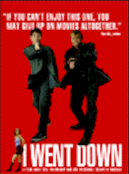

Contents | Features | Reviews | Books | Archives | Store |
 |
|
| Movie Credits | Buy It! |
I Went Down
Review by Eddie Cockrell
Posted 10 July 1998
|  | Directed by Paddy Breathnach Starring
Brendan Gleeson, Peter McDonald, Screenplay by Conor McPherson |
Never less than involving, contemporary Irish films have a scrappy, often absurdist brio that makes for stimulating cinema. Joining such recent examples as Pat O'Connor's Circle of Friends, Thaddeus O'Sullivan's Nothing Personal, Stephen Frears' The Van, Jim Sheridan's The Boxer, Neil Jordan's The Butcher Boy, and such splendid but sadly unavailable movies as Sue Clayton's The Disappearance of Finbar and Gerard Stembridge's Guiltrip (to name two of many) – not to mention a handful of other fine imports from elsewhere in Europe (the Ukranian/French A Friend of the Deceased, Norway's Junk Mail, the Austrian thriller Funny Games) that have been providing strong alternatives to suffocating Hollywood fare – I Went Down is a slight but memorable twist on the mismatched buddy movie that parlays the engaging good will of its leads to overcome the predictable trajectory of the underworld story.
Having been abruptly dumped by his girlfriend Sabrina (Antoine Byrne) while in prison, the mournful Git (newcomer Peter McDonald) pops round the pub upon his release to check out his competition, Anto (David Wilmot), only to run afoul of local Dublin crime boss Tom French (Tony Doyle, Circle of Friends). Doing penance for his affront, Git is paired with the menacing Bunny Kelly (Brendan Gleeson, The Butcher Boy) and dispatched to Cork in search of "The Friendly Face" (Donal O'Kelly, The Van), who will in turn lead them to Frank Grogan (Peter Caffrey, Criminal Conversations), a former confederate of French who has stolen a great deal of money from him.
Nothing, however, proceeds according to plan: As tightly wrapped as Git is reticent, the borderline pyschotic Bunny manages to steal a series of malfunctioning cars that cause them to miss their meeting with "The Friendly Face." Rebounding admirably, they finally locate Grogan, who turns out to be annoyingly talkative ("Did you ever make love to a gangster's wife?" he asks at one point. "You can't really enjoy yourself.").
After a series of convoluted adventures – including a daring rescue, a klutzy romantic interlude and lots of talk – during which the mismatched pair form an improbable bond of convenience, they survive the final bloody showdown between French and Grogan (and presumably their own conflicting personalities) to emerge wiser and even a little richer than when they began.
The movie is punctuated with increasingly ironic intertitles ("a daring rescue!," "the value of an education"), a device that can often backfire but here serves to reassure the audience that I Went Down is at heart a good-natured comedy. Many Irish films come from writers prominent in other circles (novels, the stage), and such is the case with screenwriter Conor McPherson, who took an MA in Philosophy from University College Dublin in 1991 and has written over a dozen plays for his own Fly By Night Productions and others – including "This Lime Tree Bower," which began as a BBC Radio 4 drama, is scheduled to be mounted off-Broadway this fall and will become his feature film directing debut project. Sharp-eyed viewers can also catch his wordless cameo as a red-jacketed would-be ladykiller in one of I Went Down's inevitable pub scenes.
Director Paddy Breathnach gives the film a satisfying balance of peculiarity and propulsion, avoiding self-consciousness in the well-staged action scenes yet providing enough space for the actors to savor the florid script. The film began as "very plot-driven," he told Sight and Sound, "but as we went on the humor began to emerge." An emergence stimulated, no doubt, by the scene-stealing performance of Gleeson, who plays Bunny as a mad cross between Guy Kibbee and Udo Kier, with a bit of the old Elvis thrown in for the hell of it. McDonald holds his own as a fine foil to Bunny's idiosyncrasies (the latter loves chocolate and moves his lips while he reads), while Caffrey's off-the-wall monologues are a scream and Doyle's chilling menace grounds the film in a tangible genre reality.
Another sign of the film's adherence to current genre demands is the atmospheric blues-based score, which includes Buddy Guy's "We're Ready," Junior Wells' "Chitlin Con Carne Alternate" and a handful of King Curtis tunes but makes room for songs by The Magnetic Fields, Sergio Mendes Brazil '77, The High Llamas, Revelino, Lir, and even the Golden Earring chestnut "Radar Love."
If there's anything wrong with I Went Down (other than the often impenetrable patois) it is the derivative nature of the tale, which summons up not only the inevitable Tarantino comparison (seemingly every national cinema has taken a crack at the genre, including an annoying but immensely popular German movie called Knockin' On Heaven's Door), but such disparate but predictable recent American movies as Midnight Run, Things to Do in Denver When You're Dead and, of course, Reservoir Dogs. But what sets I Went Down apart from the pack is the same cocky confidence found in its characters. Any gangster movie that opens with a quote from Plato's Republic (for the record: "I went down yesterday to the Piraeus with Glaucon the son of Ariston") and builds its plot around a few satisfyingly plausible explanations of its title immediately sets itself apart from the pack and demands inclusion on any discerning moviegoers must-see list for the summer season.
Contents | Features | Reviews | Books | Archives | Store
Copyright © 1999 by Nitrate Productions, Inc. All Rights Reserved.